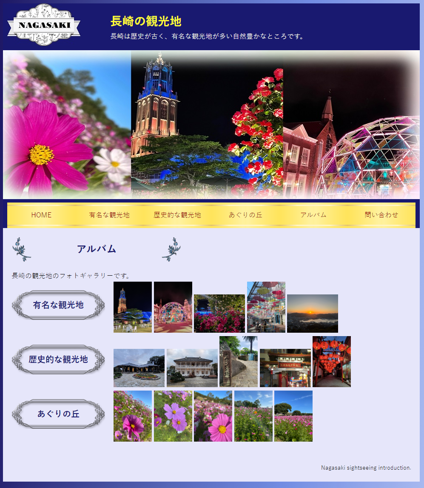

長崎の観光地を紹介するWebサイトを制作しました。私がよく訪れる場所を紹介したいと考え、制作することにしました。長崎は夜景やハウステンボスのイルミネーションが有名なので、夜の雰囲気を出すために青色と紫色をベースにしました。
プロセス
①デザイン案を考える➩②HTML、CSS、JavaScriptを書く➩③チェックする(②、③を繰り返す)➩④最終確認をする
コメント
長崎の観光地のWebサイトでは、UIのデザインを意識して作成しました。長崎の雰囲気を出せるように色の配色も考えました。
初めて作成したWebサイトのため、思ったようなデザインにならないことがありましたが試行錯誤しながら作成しました。
まず、Webサイトの目的を長崎の観光地を観光客に紹介することとしてデザイン案を考えました。
次に、Bracketsを使用してHTMLとCSSを書きました。色は全体的に統一して夜の雰囲気を表現しました。同系色を使っているけれど、文字が読みやすいように明度を変えました。色のシミュレータというアプリを使って色覚弱者が見ても文字が読みやすいようにしました。
また、レスポンシブデザインになっているため画面の幅に合わせて図1のように変化します。ナビゲーションバーの部分はマウスオーバーすると色が変わるようになっています。
問い合わせページも作成しました。
HTMLの一部
CSSの一部
|

図3 図4 |
このように図3の画面で写真をクリックすると、図4のように写真が拡大されます。 また、拡大写真のまま右側をクリックすることで次の写真を表示することができます。 左下には写真の場所が書いてあります。 |